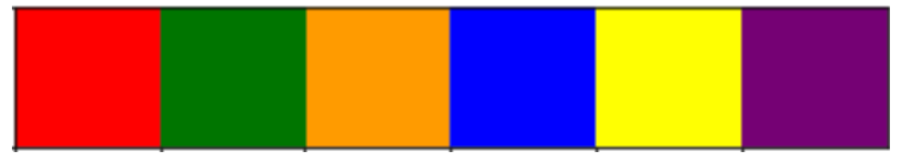
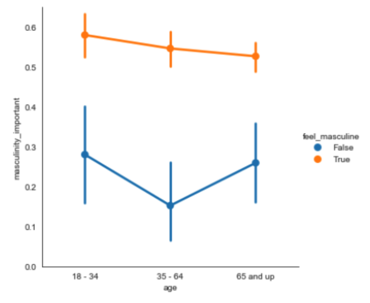
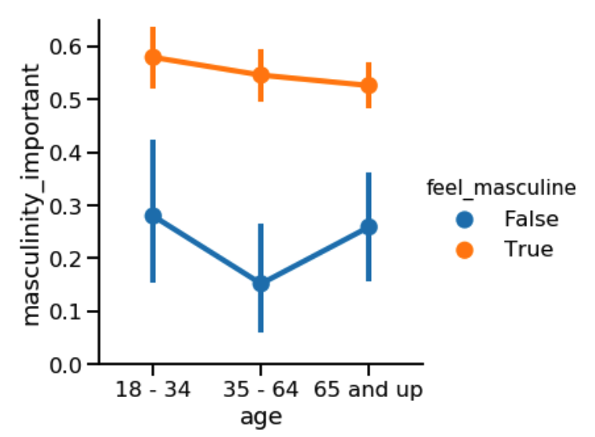

sns.catplot(x='age', y='masculinity_important',
data=masculinity_data,
hue='feel_masculine',
kind='point')
plt.show()Personalizar los gráficos de Seaborn
En este último capítulo, aprenderás a añadir títulos informativos a los gráficos y etiquetas a los ejes, ¡que son una de las partes más importantes de cualquier visualización de datos! También aprenderás a personalizar el estilo de tus visualizaciones para orientar más rápidamente a tu audiencia hacia los puntos clave. Después, pondrás en común todo lo que has aprendido en los ejercicios finales del curso.
Cambiar el estilo y el color de la trama
- Por qué personalizar?
- Razones para cambiar de estilo:
- Preferencias personales
- Mejorar la legibilidad
- Guiar la interpretación
- Razones para cambiar de estilo:
- Cambiando los estilos de las figuras
- Los estilos de las figuras incluyen el fondo y los ejes
- Opciones: “white”, “dark”, “whitegrid”, “darkgrid”, “ticks”
- Para establecer uno de ellos como estilo global para todos los gráficos se utiliza
sns.set_style()
- Estilo de figura por defecto (“white”)
- Si solo nos interesa la tendencia general:

- Estilo de figura: “whitegrid”
- Para determinar valores específicos:
sns.set_style('whitegrid')
sns.catplot(x='age', y='masculinity_important',
data=masculinity_data,
hue='feel_masculine',
kind='point')
plt.show()
- Cambiando la paleta
- Los cambios en la paleta de la figura, cambia el color de los elementos principales del gráfico
sns.set_palette()- Use las paletas preestablecidas o personalizadas
- Paletas divergentes

- Ejemplo (Paleta divergente)
sns.set_palette('RdBu')
category_order = ["No answer",
"Not al all",
"Not very",
"Somewhat",
"Very"]
sns.catplot(x='how_masculine',
data=masculinity_data,
kind='count',
order=category_order)
plt.show()
- Paletas secuenciales

- Ejemplo de paleta secuencial

- Paletas personalizadas
custom_palette = ["red", "green", "orange", "blue",
"yellow", "purple"]
sns.set_palette(custom_palette)
custom_palette = ["#FBB4AE", "#B3CDE3", "#CCEBC5",
"#DECBE4", "#FED9A6", "#FFFFCC",
"#E5B8BD", "#FDDAEC", "#F2F2F2"]
sns.set_palette(custom_palette)
Cambiar la escala del gráfico
En las figuras “context” cambia la escala de los elementos y etiquetas del gráfico
`sns.set_context()`
Del mas pequeño al más grande: “paper”, “notebook”, “talk”, “poster”.
Contexto por defecto: “paper”
sns.catplot(x='age',
y='masculinity_important',
data=masculinity_data,
hue='feel_masculine',
kind='point')
plt.show()
- Contexto grande: “talk”
- Presentaciones donde el público este mas alejado del gráfico
sns.set_context('talk')
sns.catplot(x='age',
y='masculinity_important',
data=masculinity_data,
hue='feel_masculine',
kind='point')
plt.show()